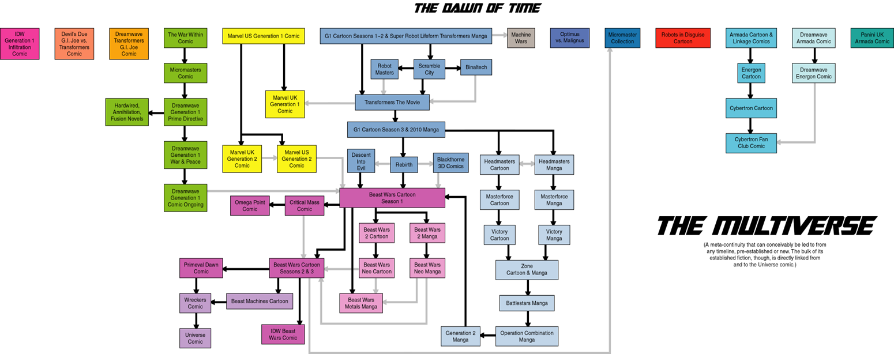

The TF Wiki third page: Continuities and the Continuity Families throughout The Transformers.
As such, one would expect many, many continuities across the many mediums out of the franchise which is so they could introduce kids and other fans new versions of the series to tell their own stories.
There have been many continuities of The Transformers but there have always been 9 dominant universes. Which are below:
Link to Index.html
Link to Page 1
Link to Page 2
Link to Page 4
- Generation 1
- This is where it all started and is biggest, oldest, and longest-running continuity family in the Transformers canon
- Sunbow Generation 1 cartoon and the 1986 movie
- Marvel G1 continuity of the US and UK comics
- Generation 2
- Transformers Beast Wars and Beast Machines
- The entire Japanese G1 continuity which is a whole other franchise which expands off into its own universe
- IDW Comics continuity
- As of right now there is also the ongoing Skybound comics of the Transformers from 2023 and onward
- Robots in Disguise (2001)
- Unicron Trilogy
- Transformers: Armada, Transformers: Energon, Transformers: Cybertron as many more comic, manga, and game expansions
- Transformers movies through the Bayverse and other related branches
- The Bayverse: Transformers (2007), Transformers 2: Revenge of the Fallen, Transformers 3: Dark of the Moon, Transformers 4: Age of Extinction, and Transformers 5: The Last Knight. There is also the expanded Bayverse timeline through the many comics, games, and novel tie-ins
- We also had the Knightverse which originally might have started as a prequel to the Bayverse but was changed to be its own movie continuity: Bumblebee (2018) and Transformers: Rise of the Beasts (2023). There has also been a tease of a Gi Joe crossover at the end of the movie but as of now that is yet to have been fully greenlit to happen
- Animated
- Another reimagined animated reboot and although it was cancelled after the end of season 3 IDW Publishing did release the Allspark Almanacs which was to expand more on the characters and the universe
- Aligned Continuity
- War For and Fall of Cybertron games
- Exodus, Exiles, and Retribution novels
- Then of course, we have the cartoons for Transformers: Prime, Rescue Bots, and Rescue Bots Academy
- As well as the overall conclusion that continuity with The Covenant of Primus
- Cyberverse
- Earthspark
- Transformers One
- Our most recent continuity as of new which is a separate movie universe from the Bayverse and Knightverse movies all about the origins of Optimus and Megatron's relationship and how they became enemies and how the Great War came to be
